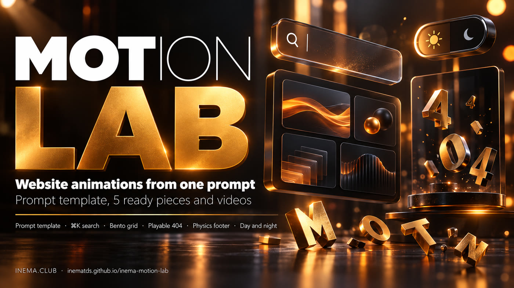

One prompt template, twenty interactive pieces in the INEMA style and a short video of each one. All have X-ray (?motion=xray labels what moves) and ?motion=off. Copy, adapt and use.

INEMA Motion Lab teaches you how to ask an AI (Claude, Codex or another one) for website animations and get something with a professional finish, not a generic effect. It brings a three-part prompt template (appearance, motion and rules) and twenty real examples made with it: searches and menus, footers, galleries, buttons, a playable 404 page, a loading screen and a day/night theme button. Each piece is a single HTML file that you open in the browser and paste into your site, and it comes with the prompt that generated it and a short video. Every piece has X-ray (add ?motion=xray to the URL to label what moves) and a ?motion=off mode that freezes everything in its final state. It is for anyone who builds pages, guides or courses and wants motion without relying on a heavy library.
The template is the most valuable part: it is what makes the next animation come out well. The pieces and the videos are the proof that it works.
Appearance with exact values, motion in numbered steps with timing in milliseconds, and technical rules that prevent the most common mistakes.
One HTML file each, no build step, in INEMA colors and fonts. They work on mobile, with the keyboard and with reduced motion. Each has X-ray (?motion=xray) and ?motion=off.
Each piece has a demo mode with a ghost cursor, recorded in WebM and MP4, ready to use as supporting footage in videos and posts.
All 20 pieces went through this same path. The test and the recording are scripts in this repository.
The video shows the automatic demo. Click "Open live" to play with the piece right here. In full screen, add ?motion=xray to see what moves labeled, or ?motion=off to freeze everything.
The search pill grows and turns into a command palette. Typing filters courses, guides and events, the arrow keys move a sliding highlight and Enter opens the item.
loading…
A capybara lives on top of the active tab and hops in an arc to the tab you click, while the amber pill stretches behind it and the title swaps letter by letter.
loading…
Instead of opening one panel for each item, a single dropdown panel slides and resizes between the items, swapping its content sideways.
loading…
The menu opens as an orange circle growing from the button, with items rising out of masks. The preview follows the pointer on desktop and sits in a fixed spot below the list on mobile.
loading…
A glass shortcut bar in the style of a system dock. The icons grow near the pointer and jump on click.
loading…
The letters I N E M A fall one by one and pile up on the footer floor. You can grab and throw them; "Tidy letters" puts everything back.
loading…
The footer is revealed like a curtain: the light page rises and shrinks, and underneath the "inema" mark rises over a planet horizon, with a sunrise glow and a magnetic button.
loading…
A sign-up footer where each letter typed in the email makes a flower grow in the garden. On submit, it releases petals and butterflies.
loading…
Three cards for the INEMA communities by language, with the real local time, and an illustrated map where a capybara walks the streets to the chosen spot.
loading…
The footer turns into a brick-breaking game. Each brick is a link in the INEMA ecosystem; when it breaks, the label flies to the tray and becomes a real link.
loading…
"What INEMA.CLUB has" in blocks of different sizes. An amber frame slides to the block under the mouse and the block wakes up with its own mini-animation.
loading…
A 3D ring with 12 INEMA projects that spins as you drag and reflects on the floor. The front card opens in the spotlight.
loading…
An editorial hero where the pointer leaves a trail of project cards in a collection beside the headline. A click enlarges the card right there.
loading…
The capybara sticker, with a cut-out white border, tilts toward the cursor and shines in rainbow and glitter depending on the angle. You can peel the corner with the mouse.
loading…
Five capsule buttons with a skin made of 72 spring points. On hover and on click, the skin swells, sinks, stretches and bounces.
loading…
A capybara walks on the ground after your cursor, runs when it gets away, brakes kicking up dust and sits when you stop. It points at the button and does a spin when clicked.
loading…
An airport departure board with a mechanical flap, for notices, upcoming lives, a clock and a menu. Items flip letter by letter and the menu ends in "GO →".
loading…
The theme button is a scene: the sun goes down, the moon comes up, the school windows light up and the capybara falls asleep. The colors of the whole page change along with it.
loading…
"This page ran away." A capybara runs and jumps over bugs while the visitor decides whether to go back to INEMA.CLUB. It starts on autopilot; the first tap hands over control.
loading…
The INEMA mark, whole from the first frame, fills with amber from bottom to top while the counter goes from 000 to 100. At the end, everything becomes the transition that reveals the dark home page.
loading…
Copy it, replace what is between < > and paste it into Claude, Codex or any AI that writes code.
Build <WHAT IT IS, in one sentence: the piece + what the person does with it>. Appearance: - Background, colors and typography with exact values (hex, font, weight, relative size). - Layout: where each block goes and how much of the area it takes (%). - Details that give it personality (outline, shadow, texture, icons). Motion: 1. <What happens when it enters the screen> — duration in ms, order, delay between items. 2. <What happens when the person interacts> — hover, click, drag, type. 3. <The physical response> — spring, bounce, inertia, the "weight" of things. 4. <The final / resting state>. 5. Demo mode: until someone touches it, a ghost cursor demonstrates the interaction on its own. Rules: - Plain JavaScript and CSS, no library (or: "<library> only for <function>"). - A single requestAnimationFrame loop, paused when the piece leaves the screen (IntersectionObserver). - Animate only transform and opacity; cap devicePixelRatio at 2 on canvas. - Never hijack page scrolling; keyboard shortcuts only when the piece is focused or under the mouse. - Accessible: real elements (button, a, input) with visible focus; the keyboard does the same as the mouse. - prefers-reduced-motion: show the final state, still (describe what it is). - A single self-contained HTML file.
| Part | Without it | With it |
|---|---|---|
| Appearance with exact values | "default AI" colors and fonts | the piece comes out looking like the brand |
| Numbered motion with timings | vague animation, too fast or too slow | intentional rhythm, easy to adjust ("step 2 slower") |
| Demo mode | nobody finds out it is interactive | the piece explains itself and becomes a video effortlessly |
| Pause off screen | heavy page, drained battery | zero cost when nobody is watching |
| Don't hijack scrolling | the page "freezes" when the mouse passes over it | the piece lives alongside the rest of the site |
| Reduced motion | people who get motion sick suffer | everyone sees the content |
Testing and re-recording the videos requires Node, Playwright and ffmpeg. To just use them, none of that is needed.
Open the piece's index.html in the browser or copy the file into your site.
# no command needed
open pecas/dia-noite/index.htmlTo test it like on a real site (and for the scripts), serve the folder over HTTP.
python3 -m http.server 8850 \
--directory . --bind 127.0.0.1Node 18+, the playwright package and ffmpeg on the system.
npm i playwright npx playwright install chromium
Steps 1 to 3 use what is already done. Steps 4 and 5 are for creating a new piece with the template.
Everything is static: pieces, prompts, videos and the two scripts.
git clone https://github.com/inematds/inema-motion-lab cd inema-motion-lab
Each piece starts in demo mode. The first tap, click or key press hands control over to you. Add ?demo=1 to the URL so the demo never stops.
python3 -m http.server 8850 --directory . --bind 127.0.0.1 # open http://127.0.0.1:8850/pecas/busca-cmdk/ # or http://127.0.0.1:8850/pecas/busca-cmdk/?demo=1
Each piece fills the whole screen of its own file. The simplest way is to embed it in an <iframe>; for a real integration, copy the piece's HTML, CSS and JS into your page and change the texts and links.
<iframe src="pecas/bento-glide/index.html" title="What INEMA.CLUB has" style="width:100%;aspect-ratio:16/9;border:0" loading="lazy"></iframe>
Fill in the template (molde/MOLDE-PROMPT-ANIMACAO.md), save it as pecas/<name>/PROMPT.md and ask the AI to write the index.html from it. Use the 20 PROMPT.md files as examples of the level of detail. To adjust, ask by step number: "in step 1, 80 ms instead of 120".
# example with Claude Code, in the repository folder claude "Read pecas/minha-peca/PROMPT.md and write pecas/minha-peca/index.html following the prompt."
The test checks, across all pieces: no JavaScript errors, no horizontal scrolling at 1280 and 360 px, the reduced-motion version, and whether the piece locks page scrolling. The recording produces, for each piece, 8 s in WebM and MP4 plus a cover image in videos/.
python3 -m http.server 8850 --directory . --bind 127.0.0.1 & node tools/testar-pecas.cjs 8850 # 20/20 pieces OK node tools/gravar-videos.cjs 8850 # OK busca-cmdk: webm 285 KB, mp4 349 KB … node tools/gravar-videos.cjs 8850 dia-noite # just one piece
The lab is ready to use. These are the possible next stages, not done yet.